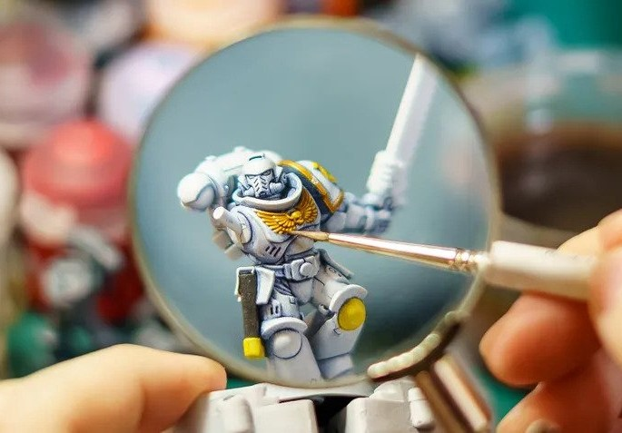
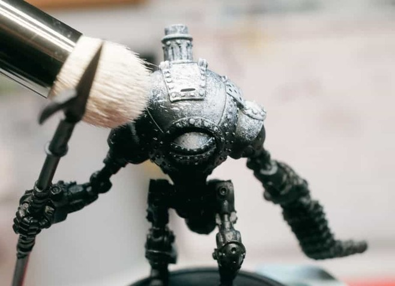

Painting Methods
Layering Miniature Painting Process:
A technique used to build up smooth transitions of color, highlights, and shadows on a miniature.
Materials Needed:
Miniature
Acrylic paints in the desired colors
Brushes, including a detail brush
Water or acrylic paint thinner (for thinning paints)
Palette or wet palette
Steps:
Basecoat: Start with a clean and properly primed miniature. Apply the basecoat, which is the initial layer of paint, using the darkest color for the area you are working on. This serves as the foundation for your layering.
Select Highlight Color: Choose a lighter color (a shade or two lighter than the basecoat) for your first layer of highlights.
Thin the Paint: To create a smooth transition, thin down the highlight color with water or a paint medium. The paint should be semi-translucent, like heavy cream.
the First Layer: Load a small amount of thinned highlight paint on your brush. Apply this layer to the area where you want the first highlight, typically the raised portions or areas that catch more light.
Blend the Edges: As you apply the thinned paint, blend the edges of the first layer into the basecoat. Use a gentle, controlled brushstroke to achieve a smooth transition. Feather the paint outwards so that it gradually fades into the basecoat.
Wait for Drying: Allow this layer to dry completely before moving on to the next. This ensures that the layers won't mix and create a muddy appearance.
Repeat the Process: Apply subsequent layers of highlights, each lighter than the last, in smaller and smaller areas. This gradually builds up the transition and intensity of the highlights. Continue blending the edges to ensure smooth transitions.
Detail Work: Use a fine detail brush for the final, brightest highlights on the miniature. Apply these sparingly to the most prominent raised areas or where you want to draw the most attention.
Shading: To add shadows, you can follow a similar process but use slightly darker colors for shading. Thin them down and apply them to the recessed areas and the areas you want to appear darker.
Final Touches: Once you're satisfied with the layering, you can make final adjustments and details as needed. This might include adding accents, refining highlights, or correcting any imperfections.

Dry Brushing Miniature Painting Process:
Dry brushing is a technique used to highlight raised details and create texture on a miniature's surface.
Materials Needed:
Miniature
Acrylic paints (a lighter color for dry brushing)
Stiff, flat brush (often a "drybrush" brush)
Paper towel or cloth
Palette
Steps:
Preparation: Start with a clean and properly primed miniature.
Loading the Brush: Dip the tip of the flat, stiff brush into the lighter paint color. Unlike other techniques, you don't need to thin the paint; instead, you want the brush to be almost dry.
Removing Excess Paint: Wipe off most of the paint onto a paper towel or cloth. The goal is to have very little paint remaining on the brush.
Dry Brushing: Gently and lightly brush the model's surface with the nearly dry brush. Hold the brush at a low angle to the surface and use a back-and-forth or circular motion.
Focus on Raised Details: Dry brushing highlights the raised areas, edges, and textures on the miniature. The paint will catch on these raised parts, creating a natural highlight effect.
Gradual Build-Up: It's crucial to build up the highlights gradually. After one pass, assess the results and decide if you want to add more layers of dry brushing. You can also vary the pressure to control the intensity of the effect.
Texture and Details: Dry brushing is particularly effective for creating texture on surfaces like fur, stone, or chainmail. It can be used for terrain pieces or models that benefit from a weathered look.
Cleanup: After dry brushing, you may need to touch up or clean up any areas where the paint strayed outside the intended highlight areas.
Both layering and dry brushing are valuable techniques in the world of miniature painting. They serve different purposes, with layering being ideal for smooth transitions and blending, and dry brushing for creating texture and adding quick highlights. You can often use them in combination to achieve the desired effect on your miniatures. Practice and experimentation will help you master these techniques and produce stunning results.